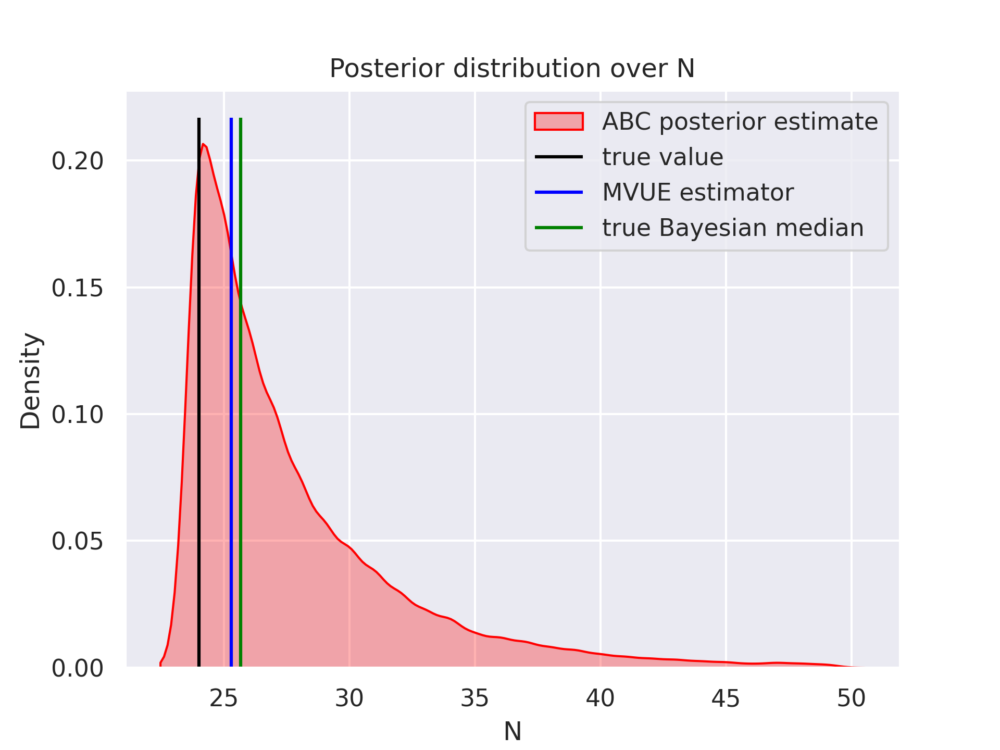

Approximate Bayesian Computation with Wrocław trams
Introduction
Recently, I presented some results from the field of Simulation-Based Inference at the Statistical Journal Club at the Astronomical Observatory. While modern neural networks allow the creation of some incredible models that allow for the Likelihood Free Inference (LFI), there are also some more old-school examples from the field of statistics. Those were usually labeled as the Approximate Bayesian Computation (ABC) methods. Here, I would like to write something about the classical implementation and apply it to one of my favorite problems known as the German tanks problem (although here there will be trams).
ABC - why?
If one wants to implement a distribution in Bayesian modeling frameworks like Pyro, there is a need to implement two methods: Log-likelihood and sampling procedure. Those two are enough to use methods like Variational Inference (VI) or Markov Chain Monte Carlo (MCMC). Both of those methods are currently widely used in almost all parts of the Physics/Astronomy as a de facto standard inference tool. However, some problems are quite problematic to tackle with those two alone. Such problems include the models without known likelihood function. We are only able to generate samples $D$ from the model according to some parameters $\theta$. But how to infer the $P(\theta|D)$ if we do not know how to compute $P(D|\theta)$? One of the widely known procedures known as ABC rejection sampling works like this:
- Generate sample $\theta_i$ from prior $\pi(\theta)$.
- Generate data $D_i \sim P(D|\theta_i)$.
- If $||D_i - D|| < \epsilon $ than we accept the sample $\theta_i$, otherwise reject.
This algorithm may seem quite strange but let’s break it down a bit. We are generating sample data and accept only those that are close enough to our observable output. Not only there are some tunable parameters like $\epsilon$, but also we have to select certain distance functions defined on the data space. The idea may seem simple as we just want to accept those parameters that generate “close enough” data points. However, there are two main problems with this algorithm:
- What if the true posterior is “far” from the prior?
- What if the data space is multidimensional?
Both of those problems manifest themselves in the same way: acceptance ratio would be abysmal. If the prior is a Gaussian distribution centered around $0$ with the standard deviation equal to $1$ there is almost no chance that we will get samples from the true posterior which is centered around $5\sigma$ away.
Similarly, if our data space has dimension $100$, it would be impossible to actually sample the exact data point. In other terms, as we are increasing the dimensionality of the data space, it is much harder to find a point lying $\epsilon$ away from the data point. How we can solve this problem?
Summary statistic
It is proven that the aforementioned algorithm computes accurate posterior for $\epsilon \rightarrow 0 $. However, it also produces correct posterior if instead of comparing distances between data points we use distance between summary statistics which are sufficient. When I learned this for the first time I thought it was just a miracle. Sufficient statistic $T(D)$ Allows us to compress the high-dimensional data to the low-dimensional representation. Unfortunately, it requires some knowledge about the distribution $P(D|\theta)$. Sufficient statistics is also important in the Blackwell - Rao theorem, which states that the conditional estimator using sufficient statistics is never worse. What are some popular summary statistics?
- Bernoulli distribution -> sum of successes,
- Uniform distribution $\mathcal{U} (a,b)$ -> minimal and maximal value,
- Normal distribution with known standard deviation -> mean value of samples.
While in the first and second examples, the summary statistic is one-dimensional, in the second one we have two dimensions.
Wrocław tram problem
Here, I would like to show the solution to something called the German tank problem. During world war II, it was applied to estimate the production of German equipment (not only tanks). In principle, if the German equipment was captured, the allies tried to write down the serial numbers of equipment and estimate what was the total amount of equipment produced. This is essentially an estimation problem, what are the parameters of uniform distribution if we know multiple samples from this distribution? There are also other problems that are similar, one of those problems can be related to the tram number estimation.
For multiple years the numbering scheme of trams in Wrocław was chaotic, there were some gaps in the tram numbers. However, last year the numbering scheme was reorganized, and right now we have $N$ tram numbers starting from the $1$. If one visits a new city it is common to take a tram or two to travel. The question is, what is the number of trams in the city if we have few train numbers? To compute this number, one needs to solve an almost exact estimation problem. How we can approach it? There is an exact solution to the problem which can be found on Wikipedia. However, here I would like to use the ABC method.
The sufficient statistic for the Uniform distribution $D_i \sim \mathcal{U}(1,N)$ is $m = max(D_i)$. During my last visit to Wrocław, I saw the following tram numbers: 1,6,7,8,9,11,23. We have $k = 7$ observations. Our sufficient statistic is equal to $m = 23$. To compute the posterior distribution for $N$ I follow this procedure:
- Sample maximum tram number $N_i$ from prior $N \sim \mathcal{U}(T(D),50)$ (maximum number of trams is $50$).
- Sample $k$ different numbers of trains from $\hat{D}_i \sim \mathcal{U}(1,N_i)$.
- If $max(\hat{D_i}) = m$ than we accept the sample $N_i$ for our posterior.
Here, we are using $\epsilon=0$ which is quite unique and applicable only when we have a countable number of possible outcomes. It turns out that such implementation should give an exact posterior!
Python implementation is quite straightforward. I sample $10^6$ distinct $N_i$ values from the prior. Then, I proceed with the selection. To increase the sampling rate, I sample $N_i$ starting from the maximal number of trams that were spotted. In the end, the sampling rate is around $5%$ which is not great. What about the results?
In red we have the KDE estimate from the ABC sampling. The black line represents the true number of trains in Wrocław $24$. In my calculation, I exclude the $0$ line, as it wasn’t running during my last visit (otherwise there would be $25$ trams). The blue value denotes the Minimum-Variance Unbiased Estimator (MVUE) $MVUE = m + \frac{m}{k}-1$. Green value denotes the Bayesian median value $Med = m + \frac{m}{k-1}\ln{2}$. Maximum likelihood estimation is $m=23$ which is one short of the true value.
Conclusions
As demonstrated, the ABC posterior estimation can produce accurate posterior estimations for the tram problem. However, the problem that was solved is very simplified. Usually, real-life tasks are much more problematic. There are very few publications that would apply this method and obtain state-of-the-art results. However, some real-life astronomical examples have been made including exoplanet occurrence rates. The true problematic part of the method manifested itself fully, as several ABC sampling rounds were applied to mitigate problems with the sampling rate. While sufficient statistics may reduce the curse of dimensionality, it is quite hard to reduce the problems associated with the prior-posterior relative distance. In our simple application, those problems also manifested themselves, despite all the efforts sampling rate was very low $4.3%$. If we would permit wider posterior $\mathcal{U}(1,100)$, our sampling rate would be even lower. Hence, the ABC method is certainly not the best for the inference.